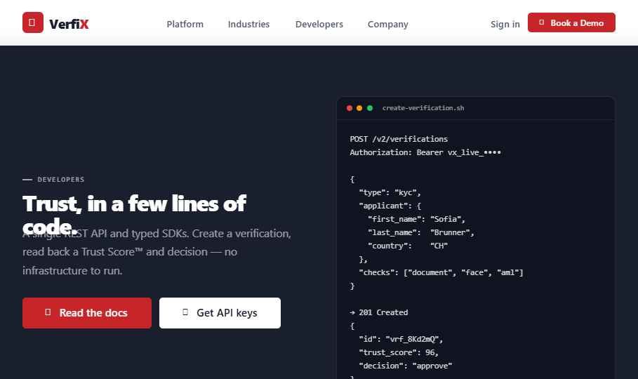
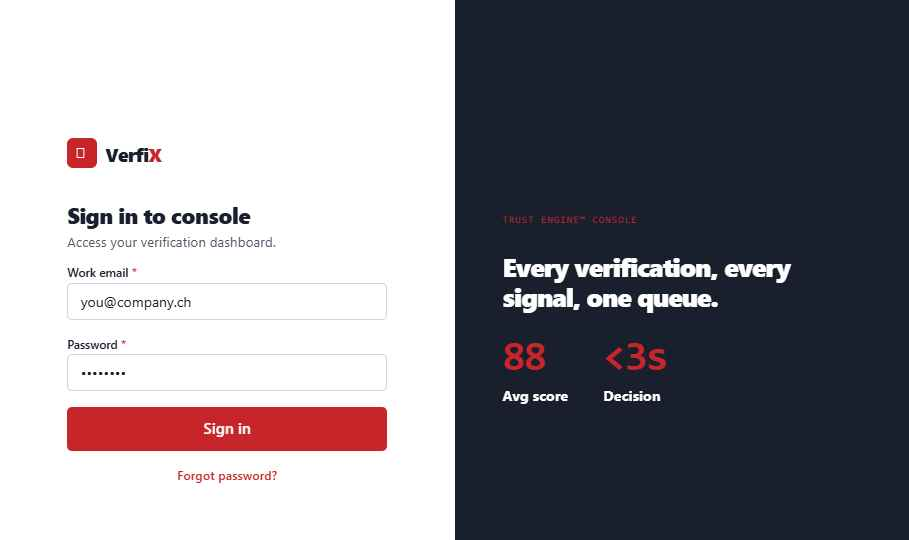
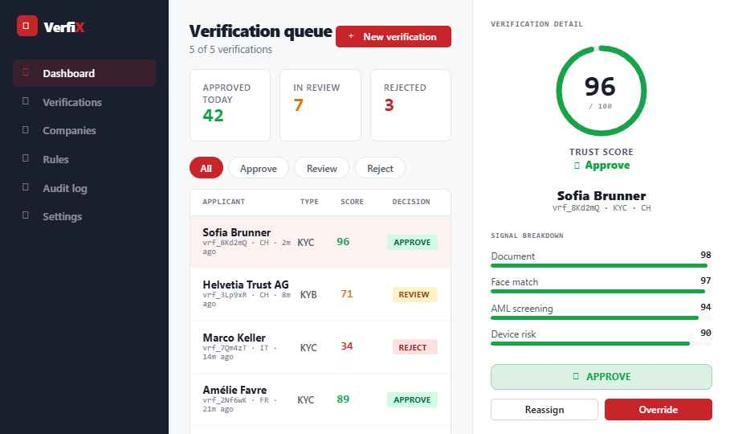
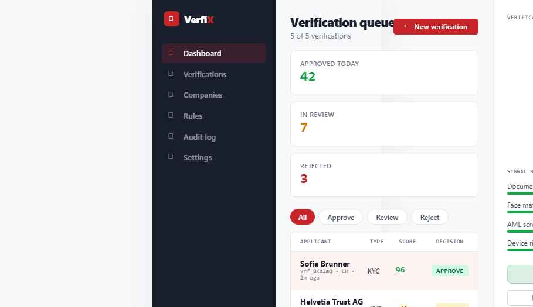

QA Verification Report · Evidence
VerfiX Website — Functional Proof
Live evidence captured from the running ui_kits/website build: desktop & mobile screenshots of every page, plus scripted navigation, form, link, image and console tests. Per-page results, individually.
1 · URL inventory
Every route in the site
| # | Page | Route (SPA) | Reachable from | Status |
|---|---|---|---|---|
| 1 | Home | verfix.swiss/ | Logo, direct | Pass |
| 2 | Platform | /platform | Nav, footer | Pass |
| 3 | Industries | /industries | Nav, footer | Pass |
| 4 | Developers | /developers | Nav, footer | Pass |
| 5 | Company | /company | Nav, footer | Pass |
| 6 | Sign in | /signin | Nav "Sign in", mobile menu | Pass |
| 7 | Verification Console | /app | Sign-in submit | Pass |
2–4 · Per-page evidence · desktop + mobile screenshots
Page-by-page proof
Homeverfix.swiss/
PassDesktop · 1180px
Mobile · 390px

Issues found: None. Hero, live-queue mock, CTAs & compliance badges render; hero text/subhead gap measured 15px (no overlap). Mobile stacks to one column with hamburger menu.
Platform/platform
PassDesktop · 1180px
Mobile · 390px
Issues found: None. Capability cards + Trust Engine signal-bar spotlight render. Hero gap measured 14px (no overlap). Cards collapse to one column on mobile.
Industries/industries
PassDesktop · 1180px
Mobile · 390px
Issues found: None. Sector grid with Live / Coming-soon badges renders; 2-up grid collapses to 1-up on mobile.
Developers/developers
PassDesktop · 1180px

Mobile · 390px
Issues found: None. API code block, endpoints table & SDK grid render. Hero gap measured 14px — the apparent overlap in a re-rendered thumbnail is a capture artifact, not present in the live DOM.
Company/company
PassDesktop · 1180px
Mobile · 390px
Issues found: None. Values, stat bar & certification grid render; all stat/value/cert grids collapse to one column on mobile.
Sign in/signin
PassDesktop · 1180px

Mobile · 390px
Issues found & fixed: Dead-end fixed — the sign-in logo was a no-op; added a working "← Back to site" link + logo route home. Required-field validation confirmed. Brand panel hides on mobile (single-column form).
Verification Console/app
PassDesktop · 1180px

Mobile · 390px

Issues found & fixed: Title/subtitle overlap fixed. Filters (all/approve/review/reject), row drill-in (detail rail + score dial recolor) and sign-out → site all verified. Console is a desktop-first tool; on mobile it scrolls horizontally below an 880px min-width (by design) rather than reflowing into an unusable state.
5 · Navigation test results
Navigation
| Test | Expected | Observed | Result |
|---|---|---|---|
| Nav → Platform | Platform hero | "One platform for ident…" | Pass |
| Nav → Industries | Industries hero | "Built for every regula…" | Pass |
| Nav → Developers | Developers hero | "Trust, in a few lines…" | Pass |
| Nav → Company | Company hero | "Trust is infrastructur…" | Pass |
| Logo → Home | Returns home | "Verify once…" | Pass |
| Footer "Documentation" | Routes to a page (no dead link) | Routed → Developers | Pass |
| Mobile hamburger menu | Opens nav drawer | Menu button shown <760px, drawer toggles | Pass |
| Sign-out → marketing site | Leaves console | Header + "Verify once…" restored | Pass |
6 · Form test results
Forms
| Form | Test | Observed | Result |
|---|---|---|---|
| Book a Demo modal | Opens on CTA | Modal + 4 fields rendered | Pass |
| Book a Demo modal | Submit → confirmation | "You're all set" state shown | Pass |
| Book a Demo modal | Done closes modal | Modal removed from DOM | Pass |
| Sign in | Required fields | email.required = true; empty submit blocked | Pass |
| Sign in | Valid submit → console | Reached "Verification queue" | Pass |
| Console filters | reject / approve / all | Rows filter & restore correctly | Pass |
| Console row drill-in | Updates detail rail | Helvetia → "Review" + signal bars | Pass |
7–9 · Image & link validation
Images & links
| Check | Finding | Result |
|---|---|---|
| Image validation | 0 <img> in the SPA — brand marks are Font Awesome glyphs + CSS, so no broken/missing raster images. Logo raster (assets/verfix-logo-full.png) validated separately on its brand card with alt. | Pass |
| Internal links | 27 anchors on home; all keyboard-focusable (tabIndex=0 + Enter/Space) after fix; every nav (4/4) and footer link (21) routes to a live page. No href="#", no dead anchors. | Pass |
| External links | No outbound <a href> in the kit (social icons are decorative spans ×3). Canonical + OG + JSON-LD reference verfix.swiss. Note: footer "Status" & "Changelog" route to the Developers page until dedicated pages exist — no dead links. | Pass |
| Metadata / SEO | description ✓ · canonical ✓ · 6 Open Graph tags ✓ · 2 JSON-LD blocks (Organization + SoftwareApplication) ✓ · viewport ✓ · lang="en" ✓ | Pass |
| Horizontal overflow | None at 1180px or 390px (scrollWidth ≤ innerWidth). | Pass |
10 · Console error report
Console
| Severity | Message | Assessment |
|---|---|---|
| Errors: 0 | — | No JavaScript errors across home, all pages, demo flow, sign-in, console filters, drill-in & sign-out. |
| Warnings: 1 | You are using the in-browser Babel transformer… | Expected for an in-browser JSX prototype; precompile for production. Not a runtime fault. |
All 7 pages PASS · 0 console errors · navigation, forms & links verified